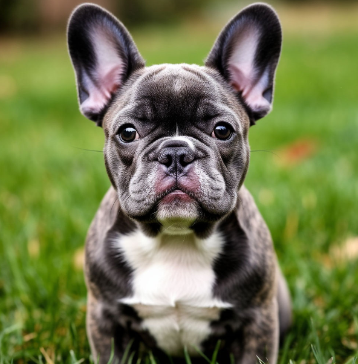
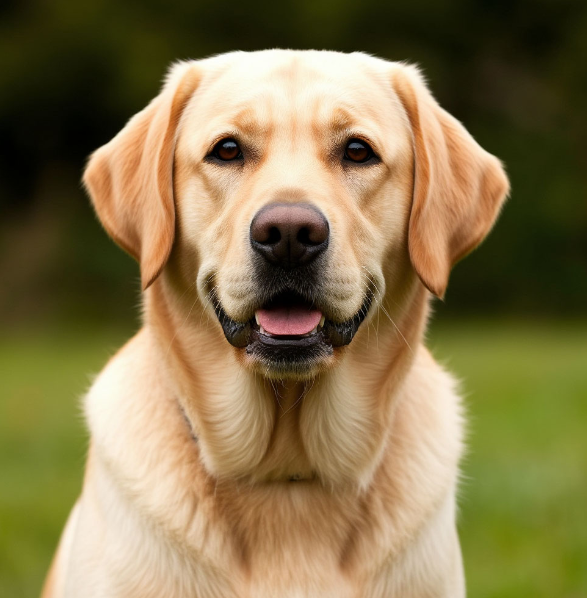
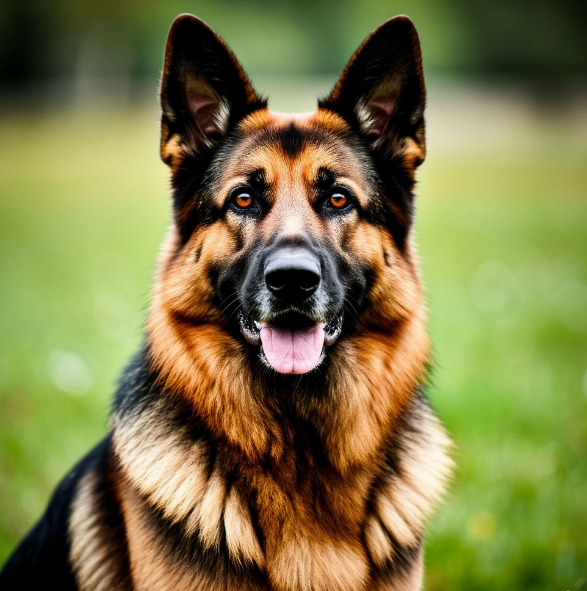

Французский бульдог
Компактная собака-компаньон весом до 14 кг, отличающаяся спокойным нравом и узнаваемой внешностью с «летучими» ушами.
Характер:
Дружелюбные, преданные и умеренно активные питомцы. Они отлично ладят с детьми, не склонны к агрессии и редко лают без причины. Французы умны, но могут проявлять легкое упрямство.
Особенности ухода:
Короткая шерсть не требует сложного ухода — достаточно раз в неделю протирать её мягкой щеткой. Обязательно следите за чистотой складок на морде и раз в 2–3 дня протирайте их влажной салфеткой.
Условия содержания:
Порода идеально подходит для квартиры. Из-за строения морды бульдоги чувствительны к жаре и нагрузкам: в жару прогулки лучше сократить.

Лабрадор-ретривер
Одна из лучших пород для семьи и активных людей. Крупная, крепкая собака с добрым и уравновешенным характером.
Характер:
Дружелюбный, энергичный и неагрессивный. Собака нуждается в постоянном контакте с человеком и плохо переносит одиночество. Лабрадоры обожают детей, легко уживаются с другими животными и очень ориентированы на хозяина.
Особенности ухода:
Шерсть короткая, но густая, линяет обильно. Требует регулярного вычесывания (2–3 раза в неделю). Нуждается в длительных прогулках с физической нагрузкой.
Условия содержания:
Идеально подходит для частного дома, но может жить и в просторной квартире при условии активного выгула. Благодаря спокойному нраву и высокому интеллекту лабрадор легко поддается дрессировке, что делает его отличным выбором для начинающих владельцев.

Немецкая овчарка
Крупная, сильная и очень умная собака, известная своей преданностью. Одна из самых обучаемых пород: легко осваивает команды и стремится угодить хозяину.
Характер:
Уравновешенный, уверенный в себе. Овчарка — отличный защитник и надежный друг семьи. Она настороженно относится к незнакомцам, но терпелива с детьми, если правильно воспитана.
Особенности ухода за шерстью:
Короткую густую шерсть нужно вычесывать 2–3 раза в неделю, в период линьки — ежедневно. Требуются длительные активные прогулки и постоянные физические нагрузки.
Условия содержания:
Идеальный вариант — частный дом с просторным двором. В квартире собака будет чувствовать себя стесненно без должного выгула. Важное условие — ранняя социализация и строгая, но справедливая дрессировка. Эта порода не подходит людям с пассивным образом жизни.